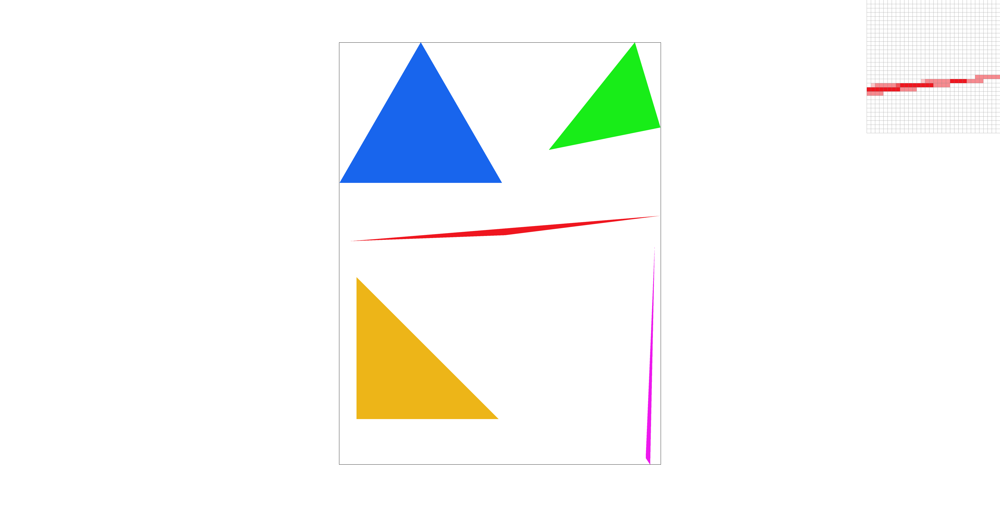
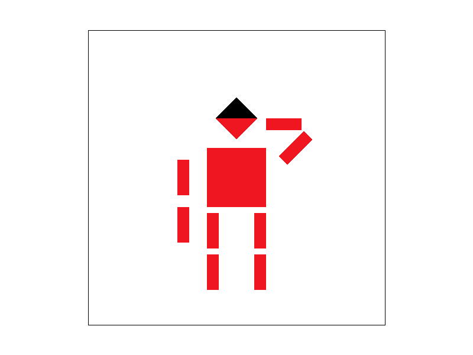
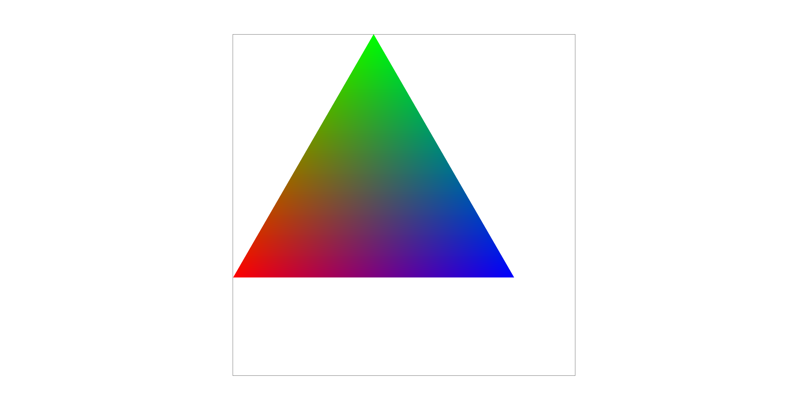
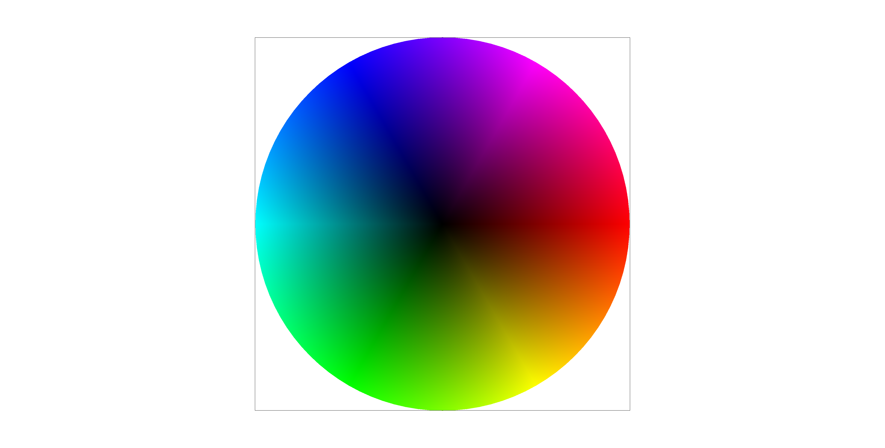
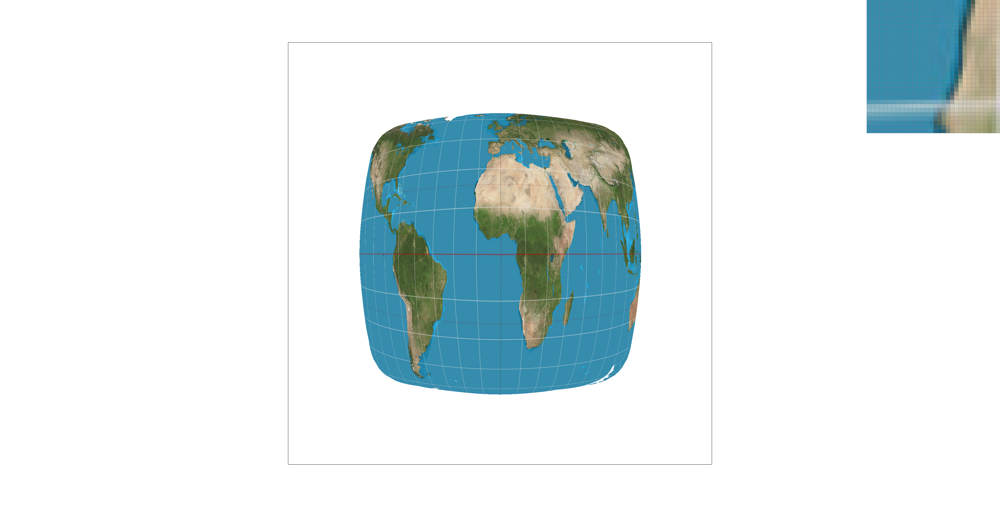
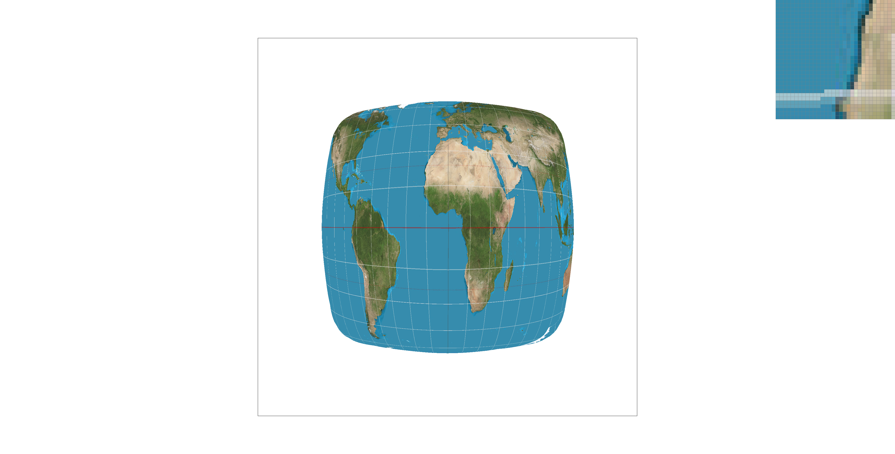
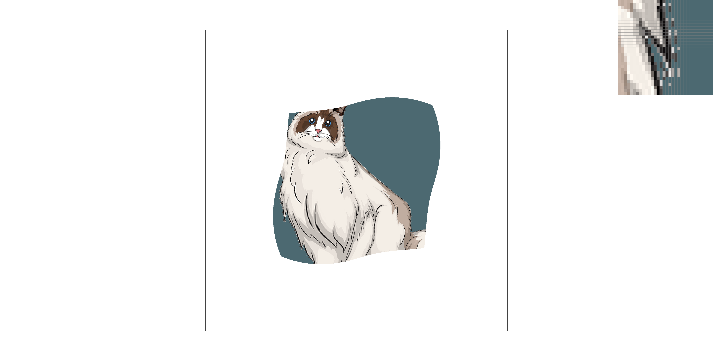
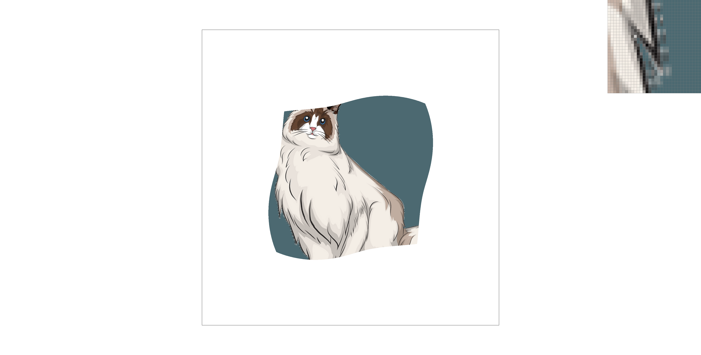

CS184/284A Spring 2025 Homework 1 Write-Up
Link to webpage: Home Page
Link to GitHub repository: Visit GitHub
Overview
Give a high-level overview of what you implemented in this homework. Think about what you've built as a whole. Share your thoughts on what interesting things you've learned from completing the homework.Task 1: Drawing Single-Color Triangles
How It Was Done:- Compute the bounding box of the triangle by finding the minimum and maximum x and y coordinates among the three vertices. These values define the smallest rectangle that fully encloses the triangle.
- Iterate through each pixel center within the bounding box. The pixel center is located at (x + 0.5, y + 0.5), ensuring accurate sampling.
- Check if the pixel center is inside the triangle using the edge function method. This involves computing cross products for each edge and verifying that all have the same sign, indicating the point is inside. Alternatively, Barycentric coordinates can be used to determine inclusion.
- If the center is inside the triangle, fill the pixel with the specified color.
- By limiting the search to the bounding box, the algorithm avoids processing pixels that are guaranteed to be outside the triangle. This reduces the number of pixels to check, making the algorithm more efficient.
- By using simple geometric tests like cross-products or Barycentric coordinates, the method ensures efficiency while keeping computations minimal.
Here is an example 2x2 gridlike structure using an HTML table. Each tr is a row and each td is a column in that row. You might find this useful for framing and showing your result images in an organized fashion.
Task 2: Antialiasing by Supersampling
How It Works:- Instead of checking just the center of each pixel, I check multiple sample points within the pixel.
- Each sample point is tested to see if it lies inside the triangle using barycentric coordinates.
- The color of the pixel is then determined by averaging the colors of all the sample points that are inside the triangle.
- The framebuffer (rgb_framebuffer_target) stores the final image that gets displayed.
- The sample buffer (sample_buffer) holds extra color data for each pixel before averaging them out. Since we're supersampling, each pixel has multiple subsamples stored in a width * height * sample_rate buffer.
- The sampling grid is a sqrt(sample_rate) x sqrt(sample_rate) layout inside each pixel, which helps with more precise sampling.
- Regular rasterization only checks one point per pixel, which leads to sharp, stair-step edges (aliasing). Supersampling smooths these out by averaging multiple samples per pixel.
- Helps prevent harsh edges and pixelation, making the image look cleaner and more natural.
- Instead of just checking the center of a pixel, I now check multiple spots within the pixel to get a more accurate result.
- Since each pixel now has multiple color values, I introduced a sample_buffer to store them before averaging.
- Since I’m sampling more points per pixel, edges of triangles blend better instead of appearing blocky.
|

|
|
|
Task 3: Transforms
- 
- I took the usual standing cube man and gave him a salute instead. I played around with the rotation and translation to get him into a more dynamic pose. Oh, and I also made the top of his head black for a little extra flair
Task 4: Barycentric coordinates
- 
- Image has tree vertices: A,B, and C. Any point P inside the triangle can be describe using barycentric coordinates
Barycentric coordinates are a way to describe any point inside a triangle using three weights(α,β, γ) that add up to 1. These weights tell you how much each vertex of the triangle contributes to the point. To calculate the weights, you compare the areas of smaller triangles formed by the point and the vertices. If all weights are between 0 and 1, the point is inside the triangle. Barycentric coordinates are super useful for interpolating colors or texture coordinates across a triangle and for checking if a pixel is inside the triangle during rasterization.
Task 5: "Pixel sampling" for texture mapping
What Is Pixel Sampling- Pixel sampling is basically figuring out what color a texture should have at a specific point on a triangle. Since textures are just images stored as grids of colors (texels), we need a way to map those texels onto our triangles in a smooth and accurate way.
- When rasterizing a triangle, each pixel we draw needs a texture color. Instead of just picking one randomly, I calculate texture coordinates (u, v) for each pixel based on barycentric interpolation. Then, I use these coordinates to sample from the texture.
- The trick is that (u, v) aren’t always perfect integer coordinates in the texture image, so we have different ways to decide what color to use.
- Nearest: Just rounded (u, v) to the closest integer index in the texture.
- Bilinear: Found the four closest texels, got their colors, and interpolated them based on how close (u, v) was to each.
| Sampling Method | Pros | Cons |
|---|---|---|
| Nearest |
|
|
| Bilinear |
|
|
|

|

|
|
|

|
The main difference between nearest-pixel and bilinear sampling is that bilinear is more computationally expensive, requiring 4 texel reads and 3 interpolations, while nearest-pixel only needs 1 texel and 1 interpolation. The difference is most noticeable around sharp edges or color transitions. When neighboring pixels have similar colors, both methods will produce nearly the same result. However, for sharp edges or jaggies, nearest-pixel just returns the closest color, while bilinear smooths the transitions by averaging surrounding pixels, reducing jaggies and creating smoother edges.
Task 6: "Level Sampling" with mipmaps for texture mapping
What Is Level Sampling?Level sampling is a technique used to handle textures at different resolutions, typically through mipmaps. Mipmaps are precomputed versions of the texture image, each at a progressively lower resolution. Level sampling helps decide which mipmap level to use depending on factors like the size of the object in the scene and the level of detail needed for rendering.
How It Was Done- L_ZERO: This simply samples from the highest resolution mipmap (level 0), without any filtering or selection of different levels.
- L_NEAREST: This method selects the mipmap level closest to the one needed, based on how the texture coordinates change across the surface. It helps pick the right level depending on how zoomed in or out the texture is.
- L_LINEAR: This method averages the two nearest mipmap levels to give a smoother transition between levels. This is useful for improving the texture quality, especially when objects are viewed at medium distances.
To decide which mipmap level to use, I calculated the texture coordinates' derivatives, which show how much the texture coordinates change in the x and y directions. This helps avoid aliasing and ensures the texture looks good no matter the object's size or the level of detail needed.
| Technique | Speed | Memory Usage | Antialiasing Power |
|---|---|---|---|
| Pixel Sampling | Fast, especially with nearest-pixel sampling. | Memory efficient, no additional texture levels. | Limited antialiasing, jagged edges in high-frequency areas. |
| Level Sampling | Moderate speed, L_ZERO is fastest, L_LINEAR is slowest. | Uses more memory due to multiple mipmap levels. | Improves antialiasing by selecting correct mipmap level. L_LINEAR provides the smoothest transitions. |
| Supersampling | Slow, as it requires additional work for each sample. | High memory usage, stores multiple samples per pixel. | Superior antialiasing, smooths jagged edges and reduces pixelation. |
|

|

|
|
|
|